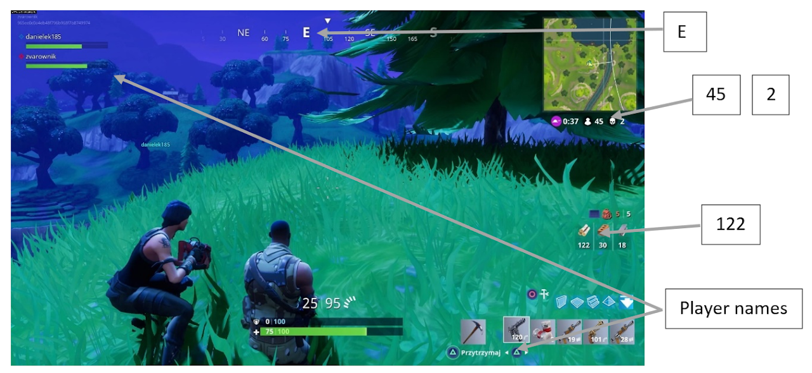
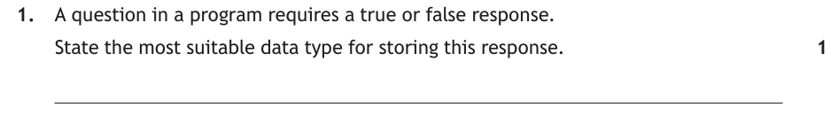
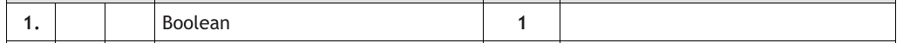
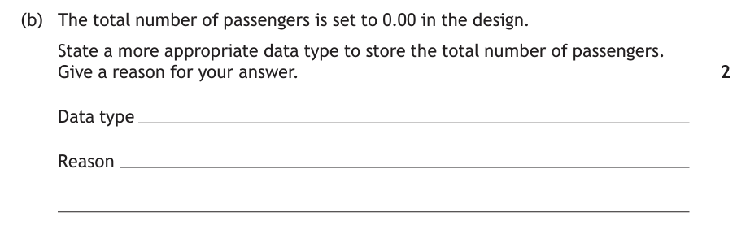
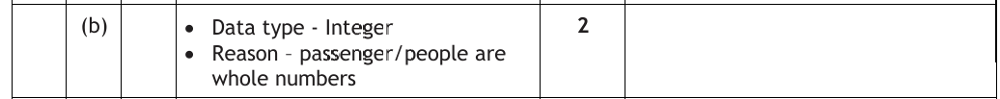
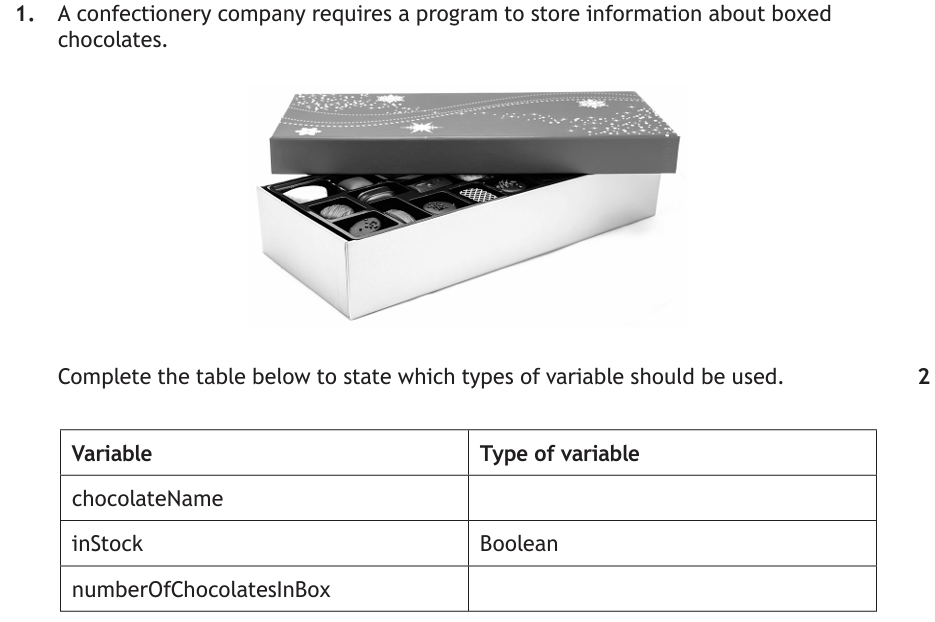
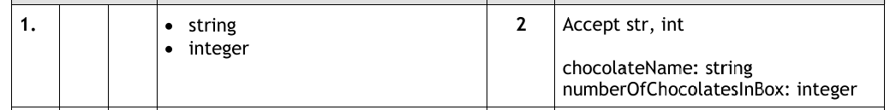
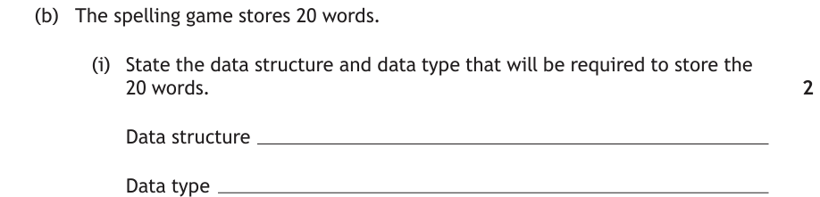
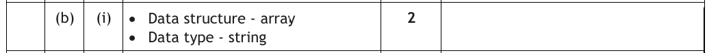
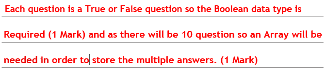

Introduction
Every program you'll ever write works with data — names, marks, prices, yes/no answers. Before a program can store any of it, the computer has to know what kind of data to expect (numbers? text? true/false?) and where to keep it. That's what this page is about: the five data types, and the two places we store data — variables (one value) and arrays (a list of values).
Key Terms
The Five Data Types
There are five data types at National 5. Learn them cold — you'll be talking about them constantly, in every topic and in every program you write:
| Data type | Stores | Examples |
|---|---|---|
| String | Text — words, letters, numbers and symbols | "PlayerOne", "KA7 2RG" |
| Integer | Whole numbers | 45, 2, -7 |
| Real | Numbers with a decimal point | 8.1, 0.99, -2.5 |
| Character | A single letter, digit or symbol | "E", "%" |
| Boolean | Only TRUE or FALSE — nothing else | True, False |
Choosing the Most Suitable Data Type
Exam questions will describe a program and ask you to identify the most suitable data type for each piece of data. Think about what the data is, not what it looks like:

- The compass direction "E" is a character — a single letter.
- 45, 2 and 122 (players left, eliminations, wood collected) are integers — whole numbers.
- The player names are strings — we use a string whenever we want to store text.
- Two types aren't labelled on screen, but the game still uses them: its review rating of 8.1 would be a real — it has a decimal point…
- …and whether the game has been saved would be a Boolean — it can only be true or false.
A program asks for the names and ages of everyone in the class, then displays how many people there are and their average age.
- The names are strings — they're text.
- The ages are integers — someone is 15, not 15.3.
- The number of people is an integer — you can't have half a person.
- The average age is a real — and this one catches people out.
Watch out for "numbers" that are really text
A phone number like 07700 900123 looks numeric, but you'd store it as a string. Storing it as a number would lose the leading 0. Same goes for postcodes. Ask yourself: will the program ever calculate with this? If not, it's probably a string.
Now try three past paper questions — read each one and jot down your own answer before opening the walkthrough.

How to tackle it: The words "true or false" are the giveaway. Only one data type exists purely to store TRUE or FALSE and nothing else. We don't overthink a 1-mark question — one word is the answer.
Watch the trap: "yes/no" or "true" is a value, not a data type. The exam wants the name of the type itself.

The answer is:
Boolean

How to tackle it: The design used 0.00 — a value with a decimal point, which means a real. So we ask the key question: does a total number of passengers ever need a decimal point? No. Passengers are people, and you can't have half a person — a whole-number count means integer.
Two marks means two parts: one for the data type, one for the reason. The reason must talk about the data itself — "passengers are whole numbers" — not just "it's more suitable". Notice this is the average trap in reverse: there, whole numbers produce a real; here, a real was wrongly used for a whole-number count.

An example would be:
Data type — integer
Reason — passengers are people, so the total will always be a whole number.

How to tackle it: One row is already filled in for us — inStock is a Boolean, because a box either is in stock or it isn't. That leaves two rows, worth a mark each. For each variable we ask the same question: what kind of data would it hold?
chocolateNameholds text — a name like "Salted Caramel" — so it's a string.numberOfChocolatesInBoxis a count — you can't have 12.5 chocolates in a box — so it's an integer.

The answer would be:
chocolateName — string
numberOfChocolatesInBox — integer
Variables
A variable stores a single item of data. Picture it as a labelled box that can hold one thing at a time. Every variable needs:
- a meaningful name (identifier) that says what it stores —
scorefor a player's score, notsorthing - a data type —
scorewould be an integer, because scores are whole numbers
What variables do
Three things happen to variables, and each has its own word:
SET score TO 0 <# initialise — start the box at 0 #> SET score TO 15 <# assign — put 15 in the box #> SET score TO 20 <# assign again — the 15 is overwritten #> SEND score TO DISPLAY <# use it — displays 20 #>
Two important behaviours to remember:
- Assigning a new value overwrites the old one — the 15 above is gone forever once the 20 goes in.
- Using a variable's name gives you its current contents — which is why the display shows 20, not 15.
It's good practice to initialise variables at the start of a program, so every box starts with a known value:
<# Initialising #> <# Assigning #> SET total TO 0 SET total TO 15 SET firstname TO "" SET firstname TO "Fred" SET price TO 0.00 SET price TO 2.49 SET found TO FALSE SET found TO TRUE
How variables fit into a program
Declare one variable for each piece of information the program needs to remember. A program that asks 100m sprinters for their name and their times in two heats, then works out their best time, needs four variables: runnerName, heat1Time, heat2Time and bestTime.
A Variable is a Box
The variable's life story, animated. Run the four lines of code one at a time and watch the box called score: a value drops in when you assign, the old value gets knocked out when you overwrite, and a copy floats out to the screen when you display.
Variables in Python
In Python, a variable is created the moment you assign a value to it with =. Use meaningful names — age = 15 tells you far more than x = 15:
# Variables using all N5 data types name = "Mr Currie" # string firstInitial = "G" # character age = 25 # integer height = 2.12 # real teacher = True # Boolean print(name) print(age)
Arrays
Variables are useful, until you need to store the test scores of a whole class. Twenty variables called score1 to score20 are inefficient, and easy to make a mistake with. When you have several similar items of the same type, you want an array.
An array is a data structure: one name, holding a whole list of values. Declaring an array needs three things:
- a meaningful name — e.g.
agesfor storing pupil ages - a data type — every item in the array must share it
- a size — how many items it holds
Each position in the array is numbered with an index — and indexes start at 0, not 1:
How arrays work
Working with one position of an array is just like working with a variable — you just add the index to say which position you mean:
SET ages(0) TO 15 <# position 0 now contains 15 #> SET ages(3) TO 12 <# position 3 now contains 12 #> SET ages(3) TO 14 <# the 12 is overwritten — position 3 now holds 14 #> SEND ages(3) TO DISPLAY <# displays 14 #>
Everything you know about variables still applies: assigning to a position overwrites what was there, and using a position gives you its current contents.
Array Visualiser
Five boxes, indexes 0 to 4. Type an index and a value, press Assign and watch the value land in — or overwrite — the right box; press Display to see what comes out. Then try index 5 and see exactly why off-by-one mistakes lose marks.
Now try a real past paper question — jot down your own answer before opening the walkthrough.

How to tackle it: There are two clues, one for each mark. "20 words" means twenty similar items stored together — a variable only holds a single value, so we need a data structure that holds several: an array. And the items themselves are words — text — so the data type is string.
Watch the trap: "array" alone isn't the full answer, and neither is "string". The question asks for the structure and the type — an array of strings.

An example would be:
Data structure — array
Data type — string
That question asked you to state the structure and type. This next one asks you to explain why they're the right choices — which is worth twice the marks, and needs twice the answer.
![Past paper question: Scott is developing an online quiz with ten true or false questions. At the end of the quiz, the user's final score will be calculated. Part a shows the user interface on a tablet — a screen headed Question 3 with a running figure image, the words True or False, the statement Usain Bolt is the first man to run 100 metres in less than 10 seconds, and two buttons labelled TRUE and FALSE. Part a i: explain why a 1-D array of Boolean values is a suitable data structure to store the user's responses. 2 marks.](../resources/sdd/worked_examples/n5_array_q2.png)
How to tackle it: Two marks for one sentence of explanation is a clue: the question is really asking two things at once, because the phrase "a 1-D array of Boolean values" contains two separate decisions. Justify each one against the problem:
- Why Boolean? Every answer the user gives is either TRUE or FALSE — look at the two buttons on the screen. A Boolean stores exactly that and nothing else.
- Why an array? There are ten questions, so ten responses to keep. A variable holds one value; an array holds many under a single name.
Watch the trap: a general definition earns only half the marks. "An array stores lots of values" is true of every array ever written — the marker needs to see it tied to this problem: ten questions, so ten stored answers. Same for the type: mention the TRUE/FALSE buttons, not just "Booleans are true or false".

An example would be:
Each question is answered TRUE or FALSE, so the Boolean data type is required. As there are 10 questions, an array is needed to store the multiple answers under one name.
Arrays in Python
Imagine a program that asks for 3 test scores and adds them up. With variables:
score1 = int(input("Please enter first score"))
score2 = int(input("Please enter second score"))
score3 = int(input("Please enter third score"))
Fine for 3 scores. Now imagine 20. Or 100. (And imagine renaming them all when your teacher asks for one more.) An array — a list in Python — stores them all under one name:
Declaring and initialising
# An array of five empty strings pupilnames = [str]*5 # An array of five integers scores = [int]*5 # An array of ten real numbers prices = [0.0]*10 # Initialising with known values — nine scores out of 20 scores = [15, 20, 19, 18, 17, 20, 16, 19, 12]
Using individual elements
Put the index in square brackets. Remember: counting starts at zero, so in the scores array above, element 0 is 15, element 1 is 20, and element 7 is 19.
scores = [15, 20, 19, 18, 17, 20, 16, 19, 12] # Get an element by its exact position firstitem = scores[0] # 15 finalitem = scores[8] # 12 # Use a variable as the index position = 4 print(scores[position]) # prints 17 # Change the values in elements scores[0] = 17 # overwrite the 15 scores[4] = scores[2] # copy element 2 into element 4 scores[6] = scores[2] + 1 # element 2, plus one
Practice Questions
Each of these follows the style of one of the worked examples above. Write your answer down before opening the marking instructions.
A taxi booking app stores each customer's mobile phone number.
State the most suitable data type for storing a mobile phone number.
Marking Instructions
String (1 mark)
A phone number looks numeric, but the program never calculates with it — and storing it as a number would lose the leading 0. Do not accept integer.
A program works out the average number of goals a team scores per match over a season. In the design, the average is set to 0 and stored as an integer.
State a more appropriate data type to store the average number of goals. Give a reason for your answer.
Marking Instructions
One mark each for:
- Data type — real
- Reason — an average involves division, so the result will usually have a decimal point (e.g. 1.4 goals per match)
The reason must mention the data itself — "real is better" or "it's more suitable" earns nothing on its own.
An online shop requires a program to store information about its T-shirts. Sizes are stored as a single letter — S, M or L.
Complete the table below to state which types of variable should be used.
| Variable | Type of variable |
|---|---|
sizeCode | |
numberInStock | Integer |
price |
Marking Instructions
One mark each for:
sizeCode— character (a single letter — S, M or L)price— real (prices like £12.99 need a decimal point)
Accept char. Do not accept string for sizeCode — the question states the size is a single letter.
A sports day program stores the finishing times, in seconds, of the 30 pupils who ran the 100 m sprint.
State the data structure and data type that will be required to store the 30 finishing times.
Marking Instructions
One mark each for:
- Data structure — array
- Data type — real
Thirty similar items under one name means an array — but the times are measured values like 14.62 seconds, so each element is a real, not an integer or a string.
A fitness app records the number of steps a user takes on each of the 7 days of a week, then displays their weekly total.
Explain why a 1-D array of integer values is a suitable data structure to store the daily step counts.
Marking Instructions
One mark each for:
- steps are counted in whole numbers, so the integer data type is required
- there are 7 daily totals, so an array is needed to store the multiple values under one name
Both halves must be tied to this problem. "An array stores lots of values" or "an integer is a whole number" are general definitions and earn nothing on their own — say why they suit the step counts.